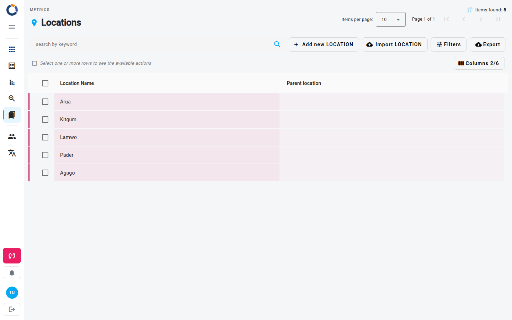

Ubicaciones
La página Ubicaciones te permite gestionar las ubicaciones geográficas a las que hacen referencia tus form, casos y otras métricas. Puedes añadir nuevas ubicaciones, editar las existentes, importar datos de forma masiva y exportar la lista actual.

Qué ves
- Ruta de navegación – muestra tu posición actual en la navegación.
- Búsqueda y Filtros – un campo de búsqueda por palabra clave y el botón Filtros para filtrar por fecha de creación (Desde fecha / Hasta la fecha).
- Contador de elementos encontrados – muestra cuántas ubicaciones coinciden con los filtros actuales.
- tabla – muestra el nombre de la ubicación y la ubicación padre de forma predeterminada. Las columnas ocultas (ID, fecha de creación, Coordenadas, atributos adicionales) se pueden mostrar mediante el botón Columnas, situado encima de la tabla a la derecha.
- Paginación – controles para navegar entre páginas.
- Acciones masivas – selecciona filas con las casillas para eliminar varias ubicaciones a la vez.
- Botones de la barra de herramientas – Add new LOCATION (icono de más) e Import LOCATION (icono de subida a la nube) se encuentran encima de la tabla.
Acciones de fila
Pasa el cursor sobre una fila para mostrar los iconos Editar y Ver. Haz clic en la fila para seleccionarla y resaltarla: la barra de acciones encima de la tabla mostrará entonces todas las acciones:
- Editar – abre el cuadro de diálogo de la ubicación para modificar sus detalles.
- Eliminar – elimina la ubicación tras confirmarlo.
- Ver – abre un cuadro de diálogo de solo lectura que muestra todos los campos.
Trabajar con ubicaciones
Añadir una nueva ubicación
- Haz clic en el botón Add new LOCATION situado encima de la tabla.
- En el cuadro de diálogo, rellena los campos obligatorios (por ejemplo, nombre de la ubicación). Los campos opcionales están marcados como (optional).
- De forma opcional, establece una ubicación padre, Coordenadas y atributos adicionales.
- Haz clic en Guardar.
Editar una ubicación
- Pasa el cursor sobre la fila y haz clic en el icono Editar (lápiz), o selecciona la fila y haz clic en Editar en la barra de acciones.
- Actualiza los campos en el cuadro de diálogo.
- Haz clic en Guardar.
Eliminar una ubicación
- Haz clic en la fila para seleccionarla y, a continuación, haz clic en Eliminar en la barra de acciones situada encima de la tabla.
- Confirma la eliminación en el aviso.
Una ubicación que esté en uso por form, o que tenga ubicaciones hijas, no se puede eliminar; consulta Metrics.
Importar ubicaciones desde un archivo
- Haz clic en el botón Import LOCATION situado encima de la tabla.
- Sube un archivo
.xls,.xlsxo.csv. - Asigna las columnas del archivo a los campos de la ubicación.
- Haz clic en Aplicar importación y revisa el resultado.
Las ubicaciones cuyo nombre ya exista se reutilizan, no se actualizan.
Exportar la lista de ubicaciones
- Haz clic en Exportar en la barra de herramientas.
- Elige qué exportar: elementos de la página (opción predeterminada), los elementos que coincidan con tus filtros o todos los elementos.
- Elige el formato: csv, xlsx o splitted xlsx y, a continuación, haz clic en Exportar.
Eliminación masiva
Selecciona varias filas con las casillas y, a continuación, haz clic en Eliminar en la barra de acciones situada encima de la tabla para eliminar varias ubicaciones a la vez.
Coordenadas de la ubicación
Si estableces el atributo Coordenadas para una ubicación, esa información se utiliza para visualizar los datos de tu form en un mapa.
Páginas relacionadas
- Metrics Overview – vuelve al inicio de las métricas.
- Cases – gestiona los casos que hacen referencia a ubicaciones.
- Organizations – gestiona las organizaciones vinculadas a ubicaciones.
- Projects – consulta los proyectos asociados a ubicaciones.